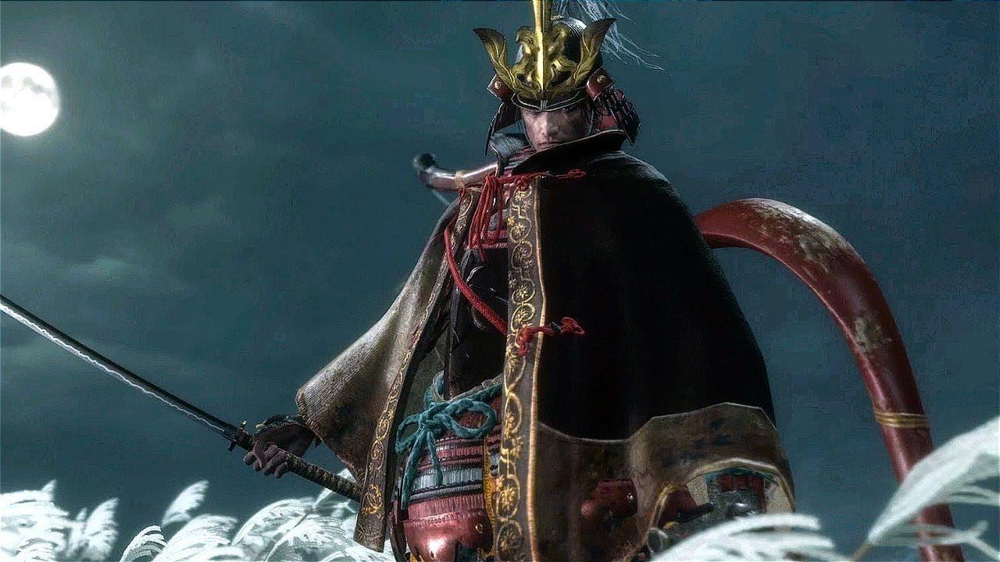

Esta pagina fue creada con la intención de enseñar respecto de una era muy importante para Japón como lo fue la Era Sengoku. Dicha intención nació gracias a mi novia quien me dio la idea una vez que me pasé todos los finales del juego de FromSoftware llamado: Sekiro - Shadows Die Twice.
Portada juego Sekiro - Shadow Die Twice - G.O.T.Y 2019
Sekiro esta inspirado en la época Sengoku y tiene muchas referencias con respecto a las vestimentas de la época, armaduras, armas, etc. Estas referencias despertaron un gran interés en mi y me llevo a investigar mas sobre la época, adentrándome en el folklore, la sociedad y todos los sucesos que llevaron a Japón a vivir este momento en su historia
Algunos ejemplos de esta era que hay en Sekiro son en los enemigos, estos tienen lanzas y espadas muy comunes de la época, asi como también las prendas y armaduras que los mismos usan a medida que avanzas en la historia del juego.
Enemigo del juego Sekiro - Monje azul
Guerreros con lanzas - Era Sengoku
Otro claro ejemplo de esto es uno de los enemigos mas emblemáticos del juego, el cual usa una armadura con ornamentas de la época de pies a cabeza. Este enemigo es Genichiro Ashina, el cual nos da la bienvenida en el tutorial que da inicio a esta magnifica aventura.

Genichiro Ashina - Jefe inicial juego Sekiro
Guerreros con armaduras - Era Sengoku
Por esta y mas razones es que decidí realizar mi proyecto en base a la Era Sengoku, nuevamente inspirado por la ayuda de mi novia que me guió y apoyo en todo el transcurso de elección de temática. Espero disfruten del contenido asi como yo disfrute creando este pequeño gran proyecto. Gracias!